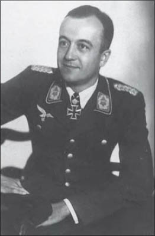

wurde am 15.4.1914 in Leipzig geboren und war vor Ausbruch des Zweiten Weltkrieges Pilot bei der Lufthansa. Zu Beginn des Krieges gehörte er dem Kampfgeschwader (KG) 40 an und nahm am Polen- und Westfeldzug sowie an der Luftschlacht um England teil. Später flog diese Einheit von Südfrankreich aus Atlantikpatrouillen, um für die U-Boot-Waffe Geleitzüge ausfindig zu machen. Der Verband war dabei mit FW 200 „Condor“-Maschinen ausgerüstet, die als Langstreckenbomber fungierten. Für die Bombardierung des Truppentransporters „Empress of Britain“ am 26.10.1940 erhielt Jope am 30.12.1940 das Ritterkreuz. Nach weiteren erfolgreichen Feindflügen verlieh man dem Flugzeugführer am 24.3.1944 das 431. Eichenlaub. Im weiteren Verlauf des Krieges war Jope Kommodore der KG 100 und 30, bis er in Gefangenschaft geriet. Nach seiner Entlassung war Jope bis zu seiner Pensionierung wieder Pilot bei der Lufthansa. Er verstarb am 31.7.1995 in Königstein/Taunus.
R.S.